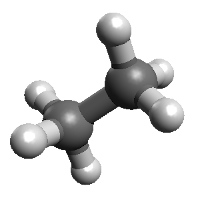
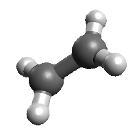
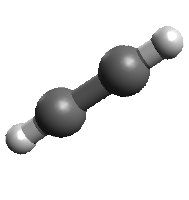

Węglowodory łańcuchowe to związki składające się tylko z atomów węgla i wodoru, w których atomy węgla połączone są ze sobą nie tworząc pierścieni. Pomiędzy atomami węgla istnieją wiązania pojedyncze, podwójne lub potrójne. Poniżej znajdują się przykłady najprostszych węglowodorów łańcuchowych z różnymi typami wiązań
Etan C2H6 jest składnikiem gazu ziemnego.
Eten C6H4 (etylen) służy do produkcji tworzyw sztucznych.
Etin C2H2 (acetylen) jest używany do spawania.
